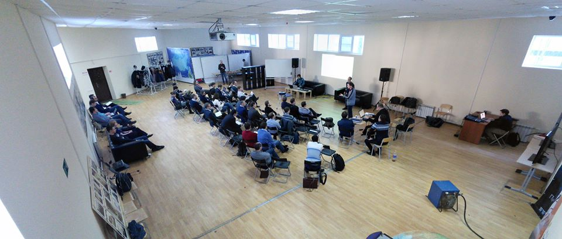

Интересуетесь картами, геоданными, ГИС, открытым кодом? Хотите быть в курсе, что нового в этих областях? Давно не видели новых отечественных разработок? Собираетесь развернуть проект, связанный с картами?
NextGIS проводит встречу со своими разработчиками. На встрече мы подробно расскажем и покажем, над чем трудились последний год - интегрированной линейкой продуктов для работы с геоданными в любой среде (веб, десктоп, мобильные). Будет много нового и интересного.
Встреча состоится в четверг 26 мая 2015 в Москве, место проведения: "Павильон" МИИГАИК, м. Курская выход #4, ул. Казакова (подробнее). Если у вас есть вопросы про мероприятие, их можно задать напрямую или на форуме.
| Время | Докладчики | Тема |
|---|---|---|
| 16.00 - 16.15 | Максим Дубинин | NextGIS |
| 16.15 - 17.15 | Александр Дежин, Денис Рыков, Александр Лисовенко | NextGIS Web - новые сервисы и возможности |
| 17.15 - 18.00 | Евгений Никулин, Денис Рыков, Станислав Петряков | QMS - базовая картография everywhere |
| 18.00 - 18.25 | Перерыв на чай | |
| 18.25 - 19.00 | Дмитрий Барышников, Александр Лисовенко | NextGIS Борщ |
| 19.00 - 19.30 | Артём Светлов | NextGIS в примерах |
| 19.30 - 20.00 | Чай, кофе, дискуссия |
Схема выхода из метро. На проходной (если будут спрашивать) сказать "в павильон на мероприятие". Павильон - одноэтажное здание с надписью "Приемная комиссия" над дверью. Если вы потерялись или есть вопросы, звоните +7926-388-5799 (Анна).
{kind=link}